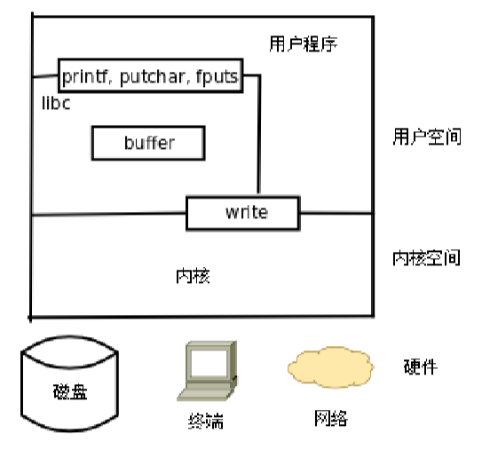

每个文件都有一个缓冲区，首先把数据写入缓冲区，然后内核再从缓冲区输入到相应的设备
man 2 * （我们看到的都是被umask修改过的权限）
一、open
#include <sys/types.h>
#include <sys/stat.h>
#include <fcntl.h>
int open(const char *pathname, int flags);
int open(const char *pathname, int flags, mode_t mode);
返回值：成功返回新分配的文件描述符，出错返回-1并设置errno
参数：
flags:O_RDONLY 只读打开
O_WRNOLY 只写打开
O_RDWR 可读可写打开
以下选项可以和必选项按位或起来作为flags参数
O_APPEND 追加
O_CREAT 文件不存在则创建它
O_EXCL 如果同时指定了O_CREAT,并且文件已经存在，则出错返回
O_TRUNC 如果文件已存在，并且以只写或可读可写方式打开，则将其长度截断为0字节
实例

gcc main.c -o app
./app hello
#include <unistd.h>
int close(int fd);
size_t write(int fd, const void *buf, size_t count);

如果文件已经存在，则
fd = open(argv[1], O_REWR)
能打开的最大文件数（1024）

ulimit -a 查看最大打开数
ulimit -n 4096 改变最大打开数
cat /pro/sys/fs/file-max 电脑可以打开的文件数
二、read
#include <unistd.h>
ssize_t read(int fd, void *buf, size_t count); //读到缓冲区
返回值：成功返回读取的字节数，出错返回-1并设置errno，如果在调read之前已到达文件末尾，则这次read返回0
拷贝案例